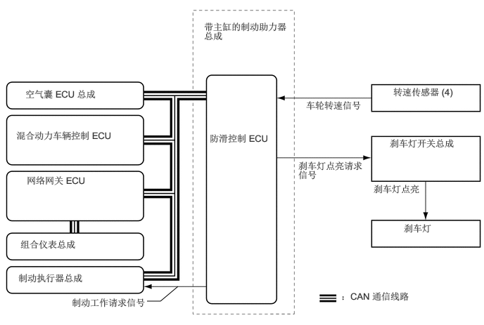

2.177,4.469 2.375,4.469
2.375,4.469 2.635,4.25
false
3.021,0.313 4.344,0.99
1.313,0.667
10
false
带主缸的制动助力器总成
0.375,1.313 2.042,1.854
1.656,0.531
10
false
空气囊 ECU 总成
0.24,1.927 2.031,2.302
1.781,0.365
10
false
混合动力车辆控制 ECU
0.396,2.594 2.271,3.125
1.865,0.521
10
false
网络网关 ECU
0.302,3.542 2.177,4.073
1.865,0.521
10
false
组合仪表总成
0.271,4.042 2.146,4.573
1.865,0.521
10
false
制动执行器总成
5.052,4.313 6.854,4.552
1.792,0.229
10
false
：CAN 通信线路
3.104,1.969 4.156,2.51
1.042,0.531
10
false
防滑控制 ECU
4.531,1.479 5.396,1.979
0.854,0.49
10
false
车轮转速信号
4.417,2.375 5.448,3.177
1.021,0.792
10
false
刹车灯点亮请求信号
5.823,1.281 7.021,1.573
1.188,0.281
10
false
转速传感器 (4)
5.771,2.042 6.885,2.563
1.104,0.51
10
false
刹车灯开关总成
5.979,3.302 6.813,3.625
0.823,0.313
10
false
刹车灯
5.531,2.719 6.281,3.26
0.74,0.531
10
false
刹车灯点亮
1.063,4.406 3.188,4.656
2.115,0.24
10
false
制动工作请求信号